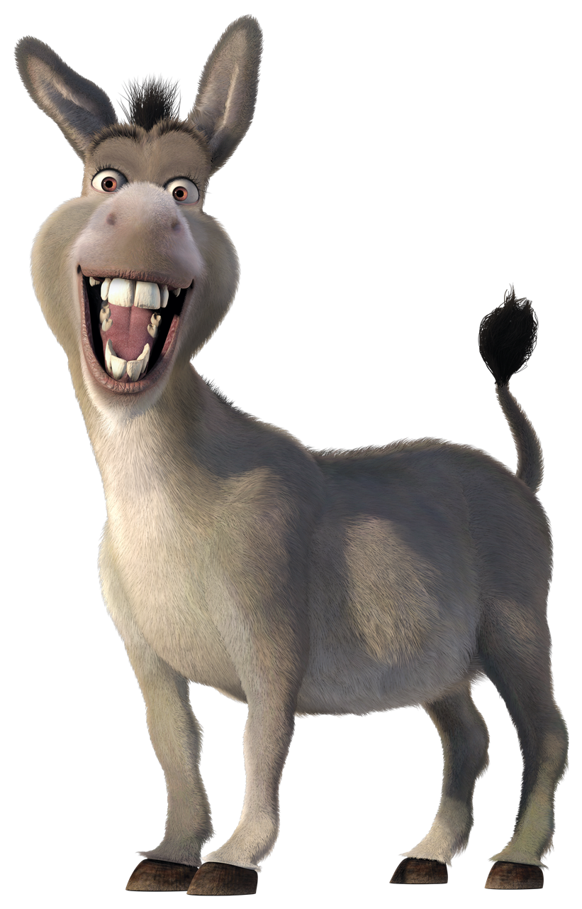

Shrek
 |
Shrek es el personaje principal, es un ogro verde y gruñón el cual vivía solo en un pantano el cual
atemorizaba a todo a lo que acercara a su pantano, ya que el disfrutaba de su soledad y no tenía amigos,
el
hacía esto debido a que todos huían de el en cuanto lo veían por su apariencia, juzgándolo sin siquiera
conocerlo, siendo los ogros como las cebollas, con capas.
|
Fiona |
Fiona es una princesa, del reino muy muy lejano, ella era resguardada en una torre bajo la protección
de
una dragón, esto fue debido a un gran secreto que tenía este era que de día era una y de noche otra,
siendo
humana por los días y al anochecer se transformaba en una ogra y lo único que lograría disolver el
hechizo
era el beso del verdadero amor, el cual ella pensaba que sería del príncipe que la rescataría de la
torre
del dragón.
|
| Burro  |
Burro es literalmente un burro, pero tiene una característica muy particular y es que el puede hablar,
él
es
pequeño y algo rellenito además de tener una gran dentadura, el es un personaje muy carismático teniendo
frases y diálogos muy ocurrentes, aunque igual resulta ser algo molesto ya que no para de hablar.
|
Gato con botas  |
El gato con botas como lo dice su nombre es un gato con botas, el proviene del cuento titulado “El
gato
con botas”, este gato tiene la personalidad de un mosquetero proveniente de España, una de sus
particularidades son sus tiernos ojos, mostrándose ante sus enemigos con ellos, haciéndoles pensar que
es
un
gato triste e inofensivo y atacarlos cuando más se confíen, su primera aparición es en la película de
Shrek
2.
|